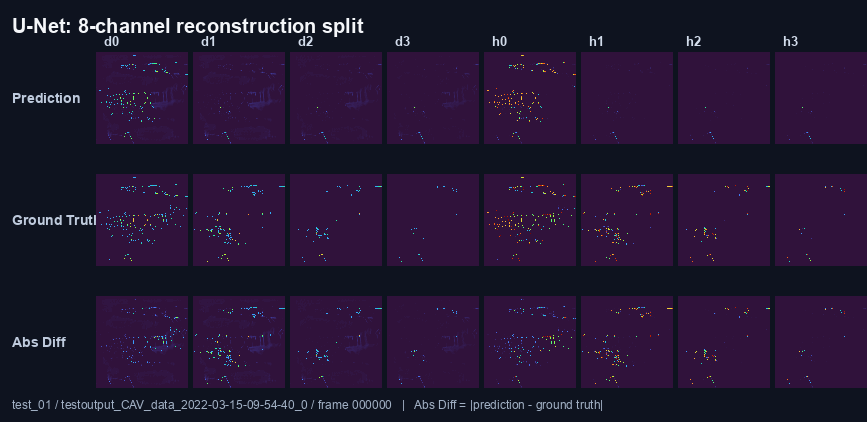
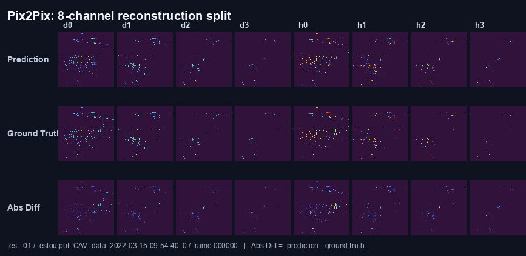
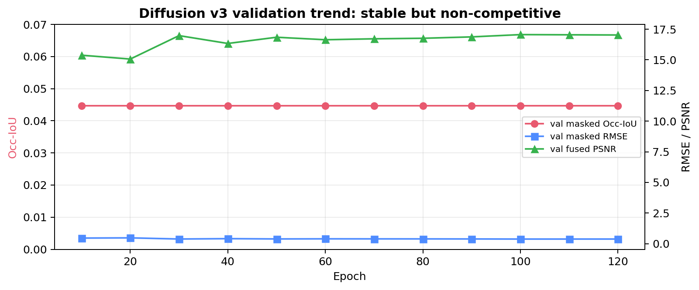
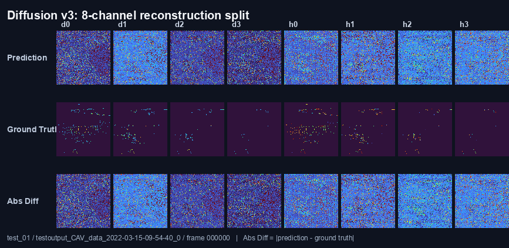
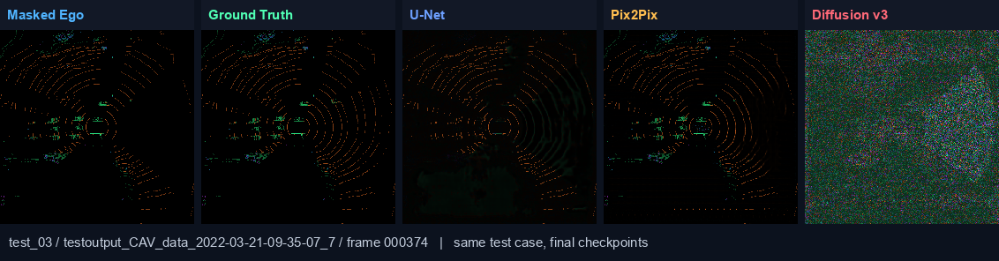

日期：2026-04-23
一句话结论： 这轮实验已经形成了清楚结论：U-Net
是当前最强 baseline，Pix2Pix 是有效但略弱的 GAN 对照，Diffusion v3
已经完整正确地跑过，但结果不具竞争力，可以作为正式 negative
baseline。
这份文档的目的不是再堆文件路径，而是帮我用大白话讲清楚：
我们现在做的是 cooperative masked BEV reconstruction。
大白话说：
masked ego BEV + neighbor BEV；clean ego BEV；这里的 8 个 channel 可以粗略理解成：
ch0-ch3: density / occupancy 相关层，主要表示不同高度
bin 里有没有点；ch4-ch7: height / structure
相关层，辅助表示高度结构。所以我们不是单纯生成“好看的图片”，而是在问：
车车协同信息能不能帮助 ego vehicle 把遮挡区域的 BEV 几何结构补回来？
U-Net 是最稳的 reconstruction baseline。
它不带 GAN，也不带 diffusion 采样，所以最适合先回答一个基本问题：
在这个数据和 mask 设置下，模型到底能不能学会恢复遮挡区？
一开始如果 U-Net 都学不起来，后面的 Pix2Pix / Diffusion
就没有意义。
所以我们先把 U-Net 做扎实，再拿它当主 baseline。
L_unet = L_shared
L_shared =
0.8082 * masked_weighted_L1
+ 0.1918 * masked_MSE
+ 0.2784 * masked_occ_BCE为什么这么设计：
masked_weighted_L1: 主要恢复项，让结构不要太糊，并且对
occupied 区域更重视；masked_MSE: 稳定数值重建，避免预测漂得太夸张；masked_occ_BCE: 明确教模型 masked 区域哪里是
occupied，哪里是 empty。这组权重不是手拍脑袋，是用 Optuna 在 U-Net 上调出来的。
老师指出一个很实际的问题：U-Net
指标最好，但图上看有些本来黑的空白区域会泛白。
这说明模型可能在空白区域也补了一点东西，也就是 false
positive。
所以我们做了两件事：
Threshold visualization
只作为可视化后处理，把很弱的 occupied response 清掉，让图更像真实
BEV。
注意：这不改正式 RMSE / PSNR / Occ-IoU 的 raw 评估。
加 precision / recall / F1
因为单看 Occ-IoU 不够解释问题。
大白话解释：
Precision: 模型说“这里有东西”的地方，有多少是真的？低
precision = 乱补空白多。Recall: 真实有东西的地方，模型找到了多少？低 recall =
漏检多。F1: precision 和 recall 的综合平衡。这一步帮我们看清楚：
| Model | Precision | Recall | F1 | 大白话解释 |
|---|---|---|---|---|
| U-Net seed42 | 0.2002 | 0.3745 | 0.2609 | 比较敢补，召回更高，但会有 false positive 和层信息弱化 |
| Pix2Pix seed42 | 0.2701 | 0.2044 | 0.2327 | 更保守，precision 更高，但 recall 比 U-Net 低 |
| Diffusion v3 seed42 | 0.0467 | 1.0000 | 0.0893 | 几乎把 masked 区域都判成 occupied，所以 recall=1.0，但 precision 很低 |
除了 false positive，我们又发现了第二个问题：U-Net reconstruction 有时候会丢失 layer-wise information。
一开始我们怀疑是 visualization 的问题，因为旧图主要看前 4 个 density
channel，后 4 个 height channel 没显示清楚。
后来我们修了 visualization，又做了 8-channel split
view，发现：
所以这就是 U-Net 的 limitation：
U-Net 总体指标最好，但它的 per-layer geometry preservation 还不完美。
Abs Diff 的意思是
|prediction - ground truth|。
越亮表示这一层这个位置错得越多。

老师建议试 Focal Loss，因为空白像素太多，普通 BCE 容易被大量 easy empty pixels 影响。
我们确实做了：
结论：
Focal Loss 的想法合理，但在我们当前数据和任务上没有带来提升，所以不能升级成 final loss。
后来我们又试了救层信息的方向：
结果：
所以最终我们保留原 U-Net baseline，不为了一个没有明确收益的小改动重跑正式模型。
Pix2Pix 是 GAN-based reconstruction baseline。
它的目的不是替代 U-Net，而是回答：
adversarial loss 能不能让 BEV 输出更 sharp、更像真实结构？
Pix2Pix loss 是：
L_pix2pix = 0.1 * L_adv + L_shared这里 L_adv 是 GAN 的 generator adversarial
loss，判别器用 hinge loss。
我们一开始试过 lambda_adv = 1.0，效果不好。
原因很直观：GAN loss
太强，压过了重建目标，模型会更在乎“骗过判别器”，而不是准确恢复 masked
区域。
后来调到 0.1 之后明显更合理。
再按老师建议做 Optuna，搜索了 0.1 到 2.0，包括
1.0 和 2.0 这种整数档。
最终结果：
best lambda_adv = 0.1
best val masked Occ-IoU = 0.1451大白话结论：
Pix2Pix 是有效对照，但没有超过 U-Net。大的 adversarial weight，比如 1.0 / 2.0，反而更差。

Diffusion 第一次云端 run 很差，但我们不能立刻说“Diffusion 不行”，因为旧版本有两个实现问题：
没有 timestep conditioning
Diffusion 去噪模型必须知道自己现在在第几个噪声步。
如果不给 timestep，模型不知道是在去强噪声还是弱噪声。
旧验证是 proxy evaluation
旧版本不是完整 reverse sampling，而是从某个 noisy step 估计一次
x0_hat。
这不是真正的 diffusion inference。
所以后来我们修了：
Diffusion v3 是目前最正式、最公平的一版：
seed = 42epochs = 120最终结果：
best epoch = 30
test masked Occ-IoU = 0.0467
test masked precision = 0.0467
test masked recall = 1.0000
test masked RMSE = 0.3810
test fused full PSNR = 17.00 dB最关键的是：
recall = 1.0precision = 0.0467这说明 Diffusion v3 的主要失败模式是：
它几乎把 masked 区域都预测成 occupied。
所以真实障碍物基本都被覆盖到了，recall 很高；但它也把大量空白区误判成 occupied，precision 很低。
因此 Occ-IoU 上不去。


| Model | Seed(s) | Epochs | Masked Occ-IoU | Masked RMSE | Fused Full PSNR | 结论 |
|---|---|---|---|---|---|---|
| U-Net | 42 / 43 / 44 | 80 | 0.1494 +/- 0.0023 | 0.05595 +/- 0.00010 | 33.66 +/- 0.02 | 目前最强，作为正式 baseline |
| Pix2Pix | 42 | 40 | 0.1317 | 0.06139 | 32.86 | 有效 GAN 对照，但没赢 U-Net |
| Diffusion v3 | 42 | 120 | 0.0467 | 0.38101 | 17.00 | 完整正式负结果，不具竞争力 |
这张图是同一个 test case 下三个模型的最终输出：

讲法：
Masked Ego: ego 自己看不到的输入；Ground Truth: 我们希望恢复出来的真实目标；U-Net: 当前最稳，整体数值最好，但会有 false positive 和
layer weakening；Pix2Pix: 更保守，视觉上有些地方更 clean，但 recall 不如
U-Net；Diffusion v3: 这版已经是正式训练版本，但会过度预测
occupied 区域，所以指标很差。第二个 test case：

下面这段可以直接读：
This week I finalized the model comparison for the cooperative BEV reconstruction task.
The task is to recover the masked ego BEV using the masked ego input and the neighboring vehicle BEV.
I first locked the U-Net baseline with an Optuna-tuned shared reconstruction loss. This remains the strongest model, with a 3-seed masked Occ-IoU of 0.1494 +/- 0.0023.After checking the visual outputs, I found two limitations of U-Net. The first one is false positives in empty regions, so I added precision, recall, and F1 to diagnose occupancy quality. The second one is layer-wise information loss, so I generated 8-channel split views to inspect each BEV channel separately.
I then tested focal occupancy loss and a light layer-preserving loss. These changes were stable in some cases, but they did not clearly outperform the official U-Net baseline, so I kept the original U-Net as the final baseline.
For Pix2Pix, I tuned the adversarial weight with Optuna. The best value was 0.1. Larger integer-scale weights such as 1.0 and 2.0 were worse, so the adversarial term has to stay small for this task. Pix2Pix is a valid GAN comparison, but it still does not beat U-Net.
For Diffusion, the first cloud run was not a fair final result because it did not include timestep conditioning and used proxy evaluation. I fixed this by adding timestep conditioning, DDIM-style sampled evaluation, resume-safe checkpoints, learning-rate scheduling, and gradient clipping. The final Diffusion v3 run completed 120 epochs on Narval A100. However, it still performed poorly. Its recall is 1.0, but precision is only 0.0467, which means it predicts too much of the masked area as occupied.
So the final conclusion is clear: U-Net is the best official baseline, Pix2Pix is a valid but weaker adversarial baseline, and Diffusion v3 is a properly tested negative baseline under the current setup.
最终不是“Diffusion 没认真跑”，而是：
U-Net 也不是完美模型。
它是当前最强 baseline，但 limitation 要诚实写出来：